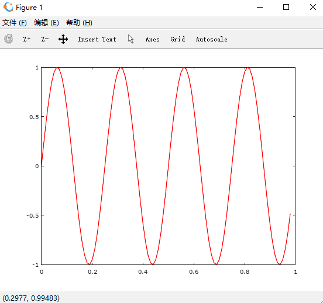
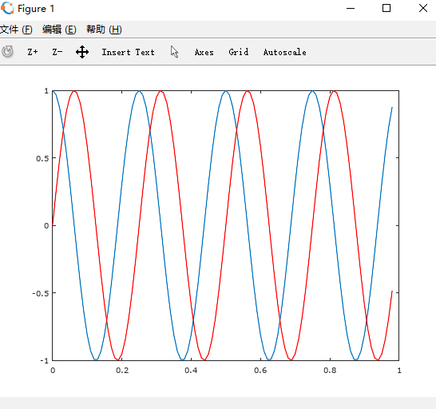
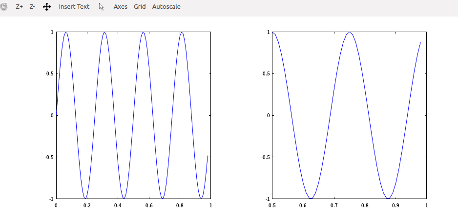
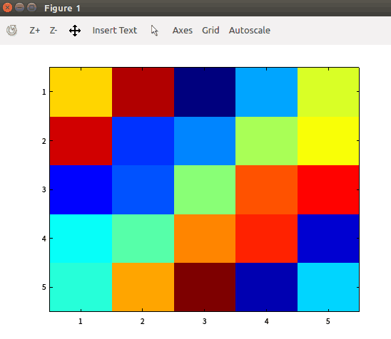
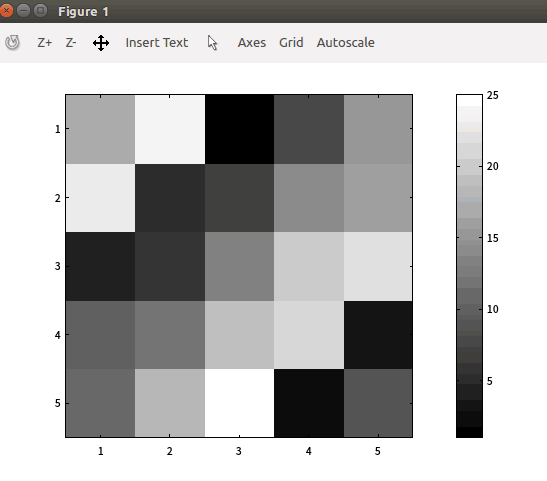

前四章的内容学习完毕，第五章讲了Octave这个软件的使用，类似于matlab，大学有过学习matlab经验所以这个学起来想对比较轻松，不论是在Ubuntu还是windows安装都很简单，这个的界面布局都和matlab基本一模一样。
虽然用python都可以实现，但Octave开源免费，比numpy更简单的实现算法，所以有必要学习一下。
其实关于Octave的东西并不想记录，和matlab一样，但为了这个博客的完整性还是简单的记录一下，我使用的是windows版的直接打开GUI就能使用了。
基本操作
1 | %基本四则运算 |
简单的运算符就是这些，重点是关于矩阵的
简单矩阵的创建
1 | 简单矩阵的创建 |
size函数
1 | >> A = [1: 2; 3 4; 5 6] |
导入与导出数据
1 | load 文件名 |
取矩阵中的值
1 | >> A |
拼接矩阵
1 | >> A = [1 2; 3 4; 5 6] |
矩阵计算
1 | >> a = [1 2; 3 4; 5 6] |
矩阵的索引
1 | >> a = [1 15 2 0.5] |
画图
1 | > t = [0 : 0.01 : 0.98]; |

在一个画布上画两副如图1
2
3
4
5>> y1 = sin(2*pi*4*t);
>> y2 = cos(2*pi*4*t);
>> plot(t,y2)
>> hold on;
>> plot(t, y1,'r')

并列显示两个图1
2
3
4
5>> subplot(1,2,1)
>> plot(t,y1)
>> subplot(1,2,2)
>> plot(t,y2)
>> axis([0.5 1 -1 1])

绘制矩阵1
2
3
4
5
6
7
8
9
10>> A = magic(5)
A =
17 24 1 8 15
23 5 7 14 16
4 6 13 20 22
10 12 19 21 3
11 18 25 2 9
>> imagesc(A)
1
>> imagesc(A),colorbar,colormap gray;

控制语句
1 | %for循环语句 |
定义函数
将函数定义写在文件中，并把文件名命名为‘函数名.m’，将文件放在当前路径下，或者用 addpath 将文件目录加入当前会话
本章学习结束